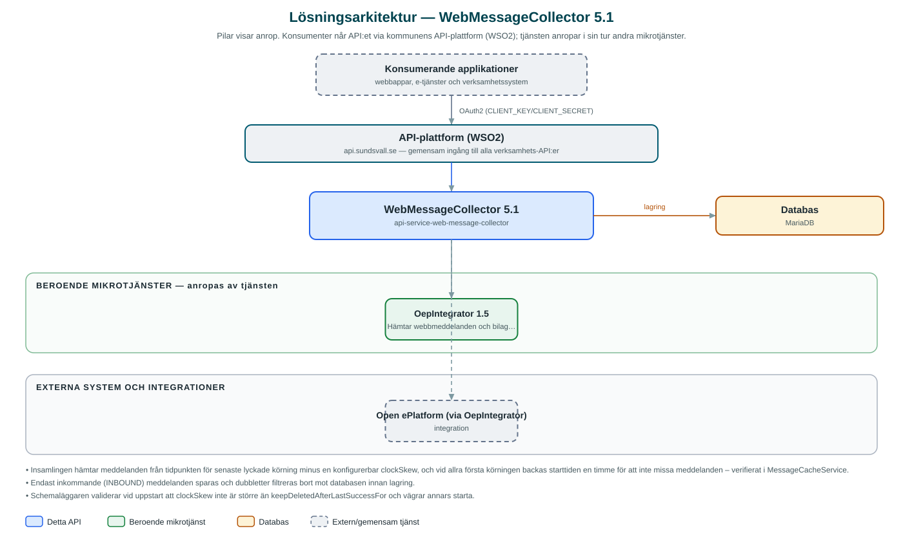

WebMessageCollector
Samlar in inkommande webbmeddelanden från kommunens e-tjänsteplattform och gör dem tillgängliga för verksamhetssystem som hanterar ärendena.
Om API:et
WebMessageCollector hämtar regelbundet in meddelanden som invånare skickat via sina ärendesidor på kommunens e-tjänsteplattform (Open ePlatform). Meddelandena mellanlagras i tjänstens databas så att ärendehanteringssystem kan hämta dem via ett enkelt REST-API i stället för att själva integrera mot e-tjänsteplattformen.
Insamlingen styrs av en schemalagd bakgrundsprocess som per kommun och e-tjänstefamilj (familyId) hämtar nya meddelanden sedan senaste lyckade körning, både från plattformens externa och interna instans. Endast inkommande meddelanden sparas, och dubbletter filtreras bort. Även bifogade filer hämtas hem och lagras tillsammans med meddelandet.
Konsumerande system listar meddelanden per e-tjänstefamilj eller per ärende (flowInstanceId), hämtar eventuella bilagor och raderar sedan det de bearbetat klart. Meddelanden som inte kunnat kompletteras med sina bilagor markeras och görs om vid nästa körning.
Det här gör API:et
- Schemalagd insamling – En cron-styrd bakgrundsprocess hämtar nya webbmeddelanden per kommun och e-tjänstefamilj från både extern och intern instans av e-tjänsteplattformen.
- Mellanlagring med dubblettskydd – Endast inkommande meddelanden sparas; redan hämtade meddelanden filtreras bort utifrån familyId, instans, meddelande-id och ärende-id.
- Bilagehantering – Bifogade filer hämtas och lagras som blobbar tillsammans med meddelandet; misslyckade bilagehämtningar markeras och görs om.
- Hämtning per familj eller ärende – Konsumenter listar meddelanden per e-tjänstefamilj eller per specifikt ärende (flowInstanceId) och kan hämta bilagor separat.
- Radering efter bearbetning – Konsumerande system raderar meddelanden och bilagor när de bearbetats; raderade meddelanden städas bort ur databasen efter en konfigurerbar tid.
API-dokumentation
API:ets samtliga resurser, parametrar och datamodeller finns beskrivna i en OpenAPI-specifikation som är hämtad ur källkodsförrådet. Den kan utforskas interaktivt i Swagger UI eller laddas ner som YAML. Programvaruförteckningen (SBOM) listar tjänstens samtliga tredjepartskomponenter med version och licens.
Teknisk dokumentation
Nedan beskrivs hur tjänsten är uppbyggd, vilka andra tjänster den anropar och vad som krävs för att driftsätta den. Informationen är härledd ur källkoden och dess konfiguration på GitHub.
Arkitektur

API:et är en mikrotjänst (Java 25, Spring Boot via kommunens gemensamma tjänsteplattform dept44 (8.0.8), byggd med Maven). Konsumenter når tjänsten via kommunens gemensamma API-plattform (WSO2) på api.sundsvall.se – tjänsten anropas aldrig direkt. Tjänsten anropar i sin tur andra mikrotjänster i kommunens tjänstelandskap. Lagring: MariaDB med Flyway-migrationer; meddelanden, bilagor och körningsinformation per e-tjänstefamilj lagras här. Övriga integrationer som förekommer i koden: Open ePlatform (via OepIntegrator).
Teknikstack
- Språk: Java 25
- Ramverk: Spring Boot via kommunens gemensamma tjänsteplattform dept44 (8.0.8), byggd med Maven
- Databas: MariaDB med Flyway-migrationer; meddelanden, bilagor och körningsinformation per e-tjänstefamilj lagras här
- Övrigt: ShedLock för distribuerad låsning av den schemalagda insamlingen, Feign-klienter via dept44
Beroenden till andra mikrotjänster
Tjänsten anropar följande mikrotjänster. Versionerna är hämtade ur källkodens integrationsklienter.
| Tjänst | Version | Användning |
|---|---|---|
| OepIntegrator | 1.5 | Hämtar webbmeddelanden och bilagor från e-tjänsteplattformen (Open ePlatform). |
Programvaruförteckning
Tjänsten bygger på 299 tredjepartskomponenter fördelade på 15 olika licenser. Till skillnad från tabellen ovan, som listar andra mikrotjänster, avses här de programbibliotek som ingår i bygget. Se programvaruförteckningen för hela listan.
Konfiguration och driftsättning
- application.yml med URL och OAuth2-klientuppgifter för OepIntegrator
- MariaDB-anslutning; databasschemat versionshanteras med Flyway
- Schemaläggning per kommun: cron-uttryck, clockSkew, lockAtMostFor samt lista av e-tjänstefamiljer (familyId) per instans
- Anrop görs per kommun – municipalityId ingår i alla API-vägar
Noterbart ur källkoden
- Insamlingen hämtar meddelanden från tidpunkten för senaste lyckade körning minus en konfigurerbar clockSkew, och vid allra första körningen backas starttiden en timme för att inte missa meddelanden – verifierat i MessageCacheService.
- Endast inkommande (INBOUND) meddelanden sparas och dubbletter filtreras bort mot databasen innan lagring.
- Schemaläggaren validerar vid uppstart att clockSkew inte är större än keepDeletedAfterLastSuccessFor och vägrar annars starta.
- Meddelanden med status DELETED städas bort först efter en konfigurerbar karenstid räknat från familjens senaste lyckade körning.
Källkod
Källkoden är öppen och finns hos Sundsvalls kommun på GitHub. I källkodsförrådet finns även instruktioner för att klona, konfigurera och starta tjänsten i egen miljö.